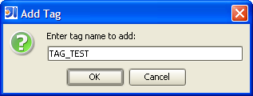
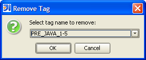
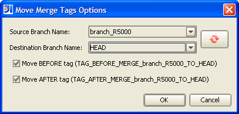

Add Tag
From within the revision graph window, a tag can be added to a selected revision. Type
the desired tag name and click OK. If the tag name entered exists somewhere else in the
revision graph on a different revision, that tag will be moved to the current selected
revision.

Remove Tag
From within the revision graph window, a tag can be removed from a selected revision.
Select the desired tag name to remove and click OK.

Move Merge Tags
From within the revision graph window, merge tags can be moved to a selected revision.
Select the desired source and destination branch names and click OK.
Examples of the generated tag names are provided below based on the tag naming
convention specified in the plugin settings dialog. Toggles are provided to control
which of the AFTER or BEFORE tags should be moved (for the 2 tag naming convention
only). If the generated tag names exist somewhere else in the revision graph on a
different revision, those tags will be moved to the current selected revision.
